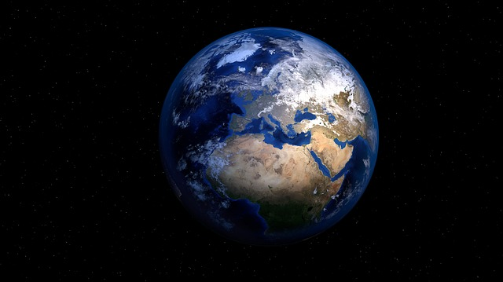

1. The Planet Earth
While Earth is only the fifth largest planet in the solar system, it is the only world in our solar system with liquid water on the surface. Just slightly larger than nearby Venus, Earth is the biggest of the four planets closest to the Sun, all of which are made of rock and metal.
2. Venice

Venice, the capital of northern Italy’s Veneto region, is built on more than 100 small islands in a lagoon in the Adriatic Sea. It has no roads, just canals – including the Grand Canal thoroughfare – lined with Renaissance and Gothic palaces.
3. Solar Eclipse

A solar eclipse occurs when the moon gets between Earth and the sun, and the moon casts a shadow over Earth. A solar eclipse can only take place during the phase of the new moon, when the moon passes directly between the sun and Earth and its shadows fall upon Earth’s surface.
4. Aurora Borealis

- An aurora, also commonly known as the polar lights, is a natural light display in Earth's sky, predominantly seen in high-latitude regions.
- Auroras display dynamic patterns of brilliant lights that appear as curtains, rays, spirals, or dynamic flickers covering the entire sky.
- Auroras are the result of disturbances in the magnetosphere caused by the solar wind.
- Major disturbances result from enhancements in the speed of the solar wind from coronal holes and coronal mass ejections.
- These disturbances alter the trajectories of charged particles in the magnetospheric plasma.
5. Mount Bromo

- The Bromo, or Mount Bromo is an active somma volcano and part of the Tengger mountains, in East Java, Indonesia.
- At 2,329 meters it is not the highest peak of the massif, but the most famous.
- The area is one of the most visited tourist destinations in East Java, and the volcano is included in the Bromo Tengger Semeru National Park.
- The name Bromo comes from the Javanese pronunciation of Brahma, the Hindu god of creation.
6. Gemini Solutions
Link to website ->
Gemini Solutions is an IT Consulting and Product Development firm. Our services provide clients with a flexibility to choose from an array of automation and application development solutions as well as giving them an option to choose from outsourcing, onshore or offshore engagement models. Gemini offers several management services and is able to combine our range of services to suit a diverse range of needs.